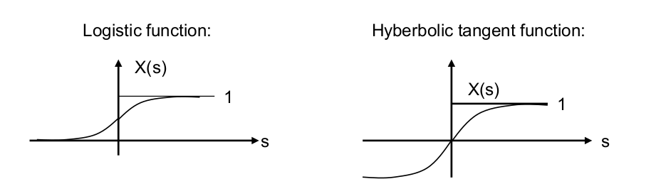

Artificial Neural Network with Backpropagation
- In this section, we will see how to use ANN to solve XOR Function problem.
Definition of Learning
-
Learning is the formulation of a system reaction according to external signals. Learning is characterized by the repeated impact of external signals on the system and external correction. Learning requires an
adaptive system. -
The external correction (acceptance or punishment) is the task of a teacher who knows the correct systems reaction. Thus the systems gets additional information by the teacher whether the system reaction is right or wrong. This process is called supervised learning.
-
When a system is learning without supervision there is no additional information about the correctness and no external correction of the system behavior.

XOR Problem
- a single layer perceptron cannot represent a simple
exclusive-orfunction.

-
For binary inputs, any transformation can be carried out by adding a layer of predicates which are connected to all inputs. For the specific XOR problem we geometrically show that by introducing hidden units, thereby extending the network to a multi-layer perceptron, the problem can be solved.
-
Adding hidden units increases the class of problems that are soluble by
feed-forward,perceptron- like networks. However, by this generalisation of the basic architecture we have also incurred a serious loss: we no longer have a learning rule to determine the optimal weights!
Backpropagation
-
A
backpropagationnetwork can be compared with a multilayer perceptron. Since there are no setpoint values for the activiation of the hidden neurons availabale for learning a modified learning rule must be developed. -
The central idea behind this solution is that the errors for the units of the hidden layer are determined by back-propagating the errors of the units of the output layer. For this reason the method is often called the
back-propagationlearning rule. -
If the activation function is differentiable we can develope a learning rule for supervised learning. Is activation of the hidden neurons will be calculated from the activation of the output neurons.
-
Typical activation functions:
